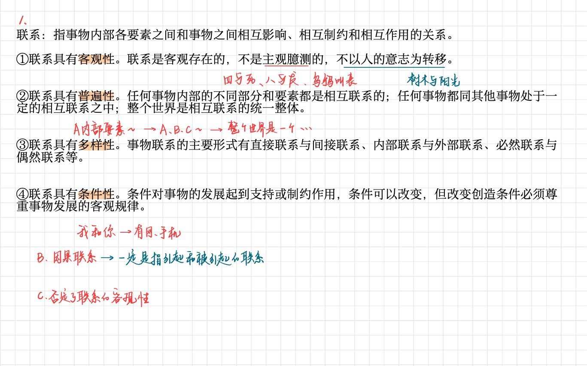

1题SC
视频已定位
唯物辩证法：事物联系的普遍性（整个世界是一个相互联系的统一整体）
《X八第一套·单选精讲》0:00:31小节：唯物辩证法联系观

题目原文
“竹外桃花三两枝，春江水暧鸭先知。“苏轼这句优美的诗句描绘了春回大地、万物复苏之间的关系，竹林、桃花、江水、鸭子等诸多事物共同构成了一幅春天的画卷。从唯物辩证法的角度看，这一诗句蕴含的哲理是
A. 世界是一个普联系的有机整体
B. 任何两个事物之同都存在着因果关系
C. 事物之间的联系都是人们感知之后才形成的
D. 多样的事物之间存在着普遍的、无条件的联系